BOOK IX. PROPOSITIONS.¶
Proposition IX.1
If two similar plane numbers by multiplying one another make some number, the product will be square.
Proposition IX.2
If two numbers by multiplying one another make a square number, they are similar plane numbers.
Proposition IX.3
If a cube number by multiplying itself make some number, the product will be cube.
Proposition IX.4
If a cube number by multiplying a cube number make some number, the product will be cube.
Proposition IX.5
If a cube number by multiplying any number make a cube number, the multiplied number will also be cube.
Proposition IX.6
If a number by multiplying itself make a cube number, it will itself also be cube.
Proposition IX.7
If a composite number by multiplying any number make some number, the product will be solid.
Proposition IX.8
If as many numbers as we please beginning from an unit be in continued proportion, the third from the unit will be square, as will also those which successively leave out one; the fourth will be cube, as will also all those which leave out two; and the seventh will be at once cube and square, as will also those which leave out five.
Proposition IX.9
If as many numbers as we please beginning from an unit be in continued proportion, and the number after the unit be square, all the rest will also be square. And, if the number after the unit be cube, all the rest will also be cube.
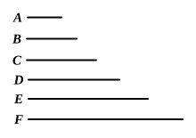
Proposition IX.10
If as many numbers as we please beginning from an unit be in continued proportion, and the number after the unit be not square, neither will any other be square except the third from the unit and all those which leave out one. And, if the number after the unit be not cube, neither will any other be cube except the fourth from the unit and all those which leave out two.
Proposition IX.11
If as many numbers as we please beginning from an unit be in continued proportion, the less measures the greater according to some one of the numbers which have place among the proportional numbers.
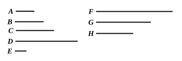
Proposition IX.12
If as many numbers as we please beginning from an unit be in continued proportion, by however many prime numbers the last is measured, the next to the unit will also be measured by the same.
Proposition IX.13
If as many numbers as we please beginning from an unit be in continued proportion, and the number after the unit be prime, the greatest will not be measured by any except those which have a place among the proportional numbers.
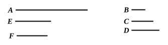
Proposition IX.14
If a number be the least that is measured by prime numbers, it will not be measured by any other prime number except those originally measuring it.
Proposition IX.15
If three numbers in continued proportion be the least of those which have the same ratio with them, any two whatever added together will be prime to the remaining number.
Proposition IX.16
If two numbers be prime to one another, the second will not be to any other number as the first is to the second.
Proposition IX.17
If there be as many numbers as we please in continued proportion, and the extremes of them be prime to one another, the last will not be to any other number as the first to the second.
Proposition IX.18
Given two numbers, to investigate whether it is possible to find a third proportional to them.
Proposition IX.19
Given three numbers, to investigate when it is possible to find a fourth proportional to them.
Proposition IX.20
Prime numbers are more than any assigned multitude of prime numbers.
Proposition IX.21
If as many even numbers as we please be added together, the whole is even.
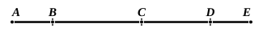
Proposition IX.22
If as many odd numbers as we please be added together, and their multitude be even, the whole will be even.
Proposition IX.23
If as many odd numbers as we please be added together, and their multitude be odd, the whole will also be odd.
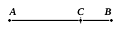
Proposition IX.24
If from an even number an even number be subtracted, the remainder will be even.
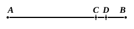
Proposition IX.25
If from an even number an odd number be subtracted, the remainder will be odd.
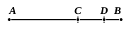
Proposition IX.26
If from an odd number an odd number be subtracted, the remainder will be even.
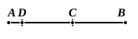
Proposition IX.27
If from an odd number an even number be subtracted, the remainder will be odd.
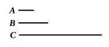
Proposition IX.28
If an odd number by multiplying an even number make some number, the product will be even.
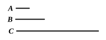
Proposition IX.29
If an odd number by multiplying an odd number make some number, the product will be odd.
Proposition IX.30
If an odd number measure an even number, it will also measure the half of it.
Proposition IX.31
If an odd number be prime to any number, it will also be prime to the double of it.
Proposition IX.32
Each of the numbers which are continually doubled beginning from a dyad is even-times even only.
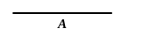
Proposition IX.33
If a number have its half odd, it is even-times odd only.
Proposition IX.34
If a number neither be one of those which are continually doubled from a dyad, nor have its half odd, it is both even-times even and even-times odd.
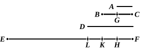
Proposition IX.35
If as many numbers as we please be in continued proportion, and there be subtracted from the second and the last numbers equal to the first, then, as the excess of the second is to the first, so will the excess of the last be to all those before it.
Proposition IX.36
If as many numbers as we please beginning from an unit be set out continuously in double proportion, until the sum of all becomes prime, and if the sum multiplied into the last make some number, the product will be perfect.